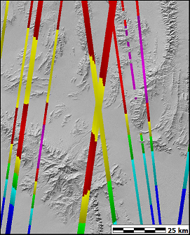

Download ICESat-2 data
Osama, N., Shao, Z., Ma, Y., Yan, J., Fan, Y., Magdy Habib, S., & Freeshah,
M. (2022). The ATL08 as a height reference for the global digital elevation
models. Geo-Spatial Information Science, 27(2), 327–346.
https://doi.org/10.1080/10095020.2022.2087108: ICESat-2 strong beams,
with uncertainty < 20 m, work well.
 |
ICESat data covering a 1 degree by 1 degree region in southern
Nevada. About 11000 lidar pulses in the map area. |
LVIS was a prototype for GEDI currently on the ISS. GEDI data comes in huge HDF5 files (several GB each), which is not particularly friendly for GIS use. It records the waveforms, a different approach from ICESat-2. Spatial resolution is 25 m.
https://stac.openlandmap.org/GEDI02/collection.json?.language=en 3336 5 degree tiles, by year. Download file has no location or year information. GeoParquet format for downloads, which GDAL can read.
As noted in Kokalj and Mast (2021) the rGEDI package was released by Silva et al. (2020) which provides user-friendly utilities for the processing and visualization of GEDI data in R. For Python users the LP DAAC released the GEDI-subsetter (Krehbiel 2020a), a tool for converting the HDF5 files into geojson objects, which can be more easily used in traditional GIS. The LP DAAC further released a series of jupyter notebooks which showcase the processing of GEDI granules in python (Krehbiel 2020b).
Kokalj, Žiga, Mast Johannes. 2021. Space Lidar for Archaeology? Reanalyzing GEDI Data for Detection of Ancient Maya Buildings. Journal of Archaeological Science: Reports, 36: 102811.
Krehbiel, Cole. 2020a. GEDI Spatial and Band/Layer
Subsetting and Export to GeoJSON Script. Sioux Falls, South Dakota, USA:
Land Processes Distributed Active Archive Center (LP DAAC). https://git.earthdata.nasa.
Krehbiel, Cole. 2020b. Getting Started with GEDI L1B, L2A,
and L2B Data in Python Tutorial Series. Sioux Falls, South Dakota, USA:
Land Processes Distributed Active Archive Center (LP DAAC). https://git.earthdata.nasa.
Silva, Carlos Alberto, Caio Hamamura, Ruben Valbuena, Steven Hancock, Adrian Cardil, Eben North Broadbent, Danilo Roberti Alves de Almeida, et al. 2020. RGEDI: NASA’s Global Ecosystem Dynamics Investigation (GEDI) Data Visualization and Processing (version 0.1.7). https://CRAN .R-project.org/package=rGEDI.
Last revision 12/9/2023